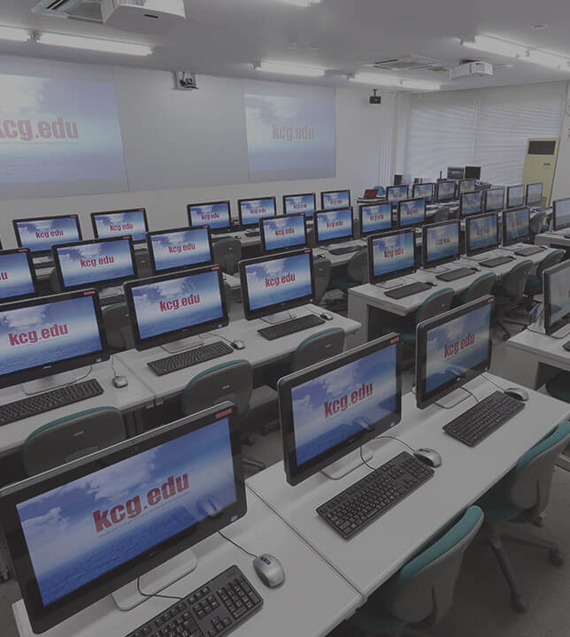

My name is Joshi Sunil Kumar.I came from Nepal to Japan for the studies. I came to Tokyo Kyoto,Japan in 17 th November 2019. Currently I am studying in KCGI
You can get the Information of my college by just clicking the picture.
You can contact me on this address:
Kyotoshi Minami-ku Higashi-kujo Kita-matsunoki Cho 2-3 Riverside
Kyoto,Japan
E-mail:joshissunill@gmail.com